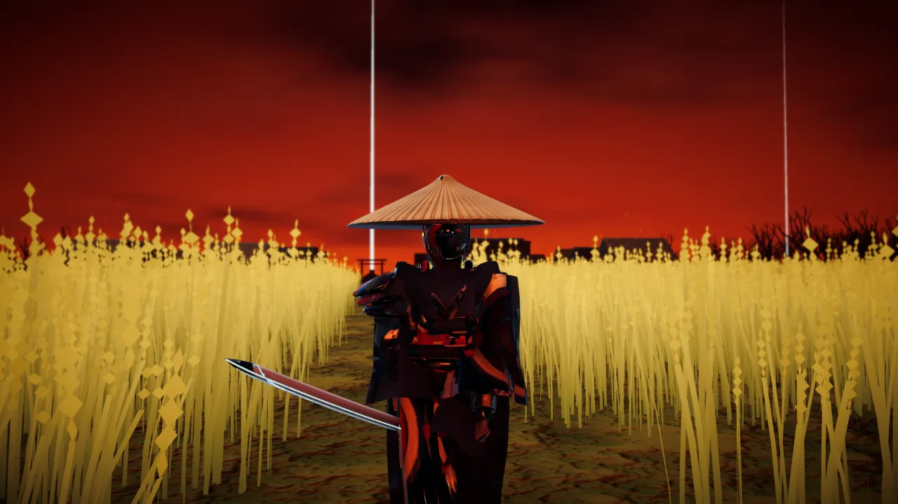
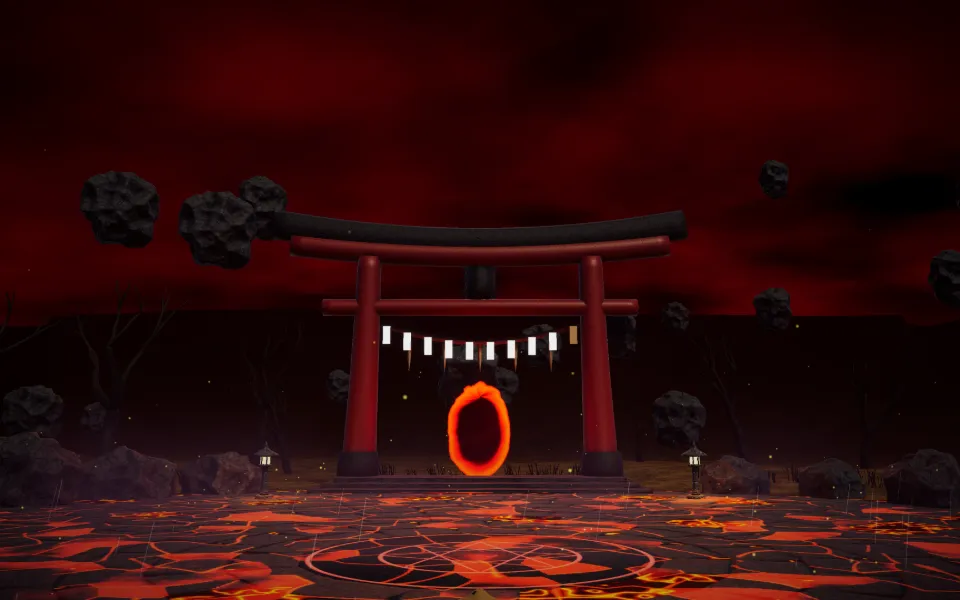
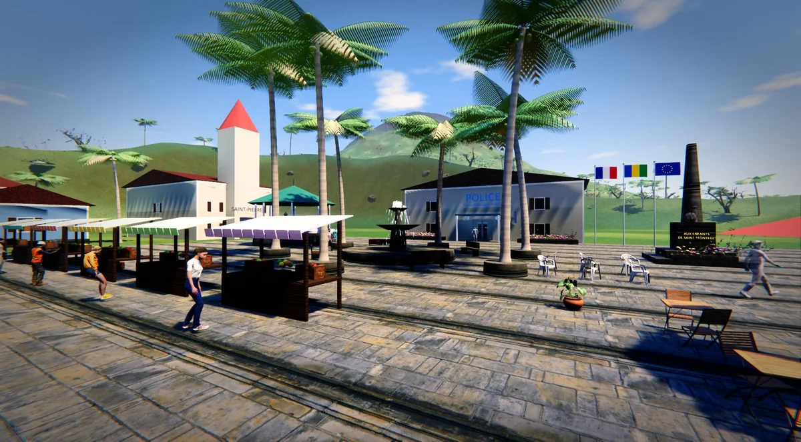
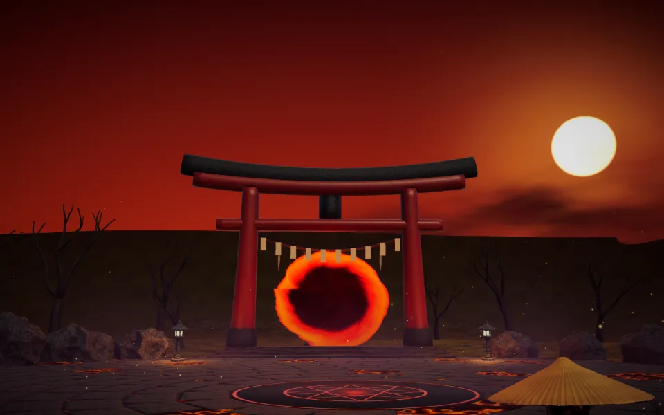
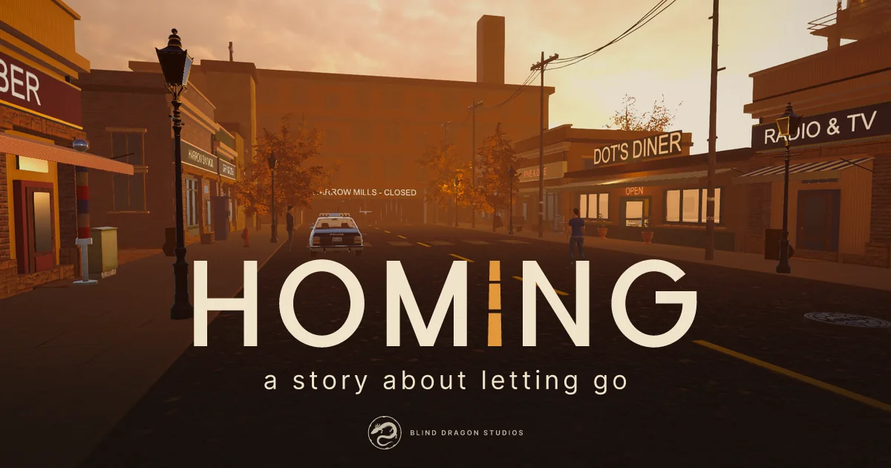
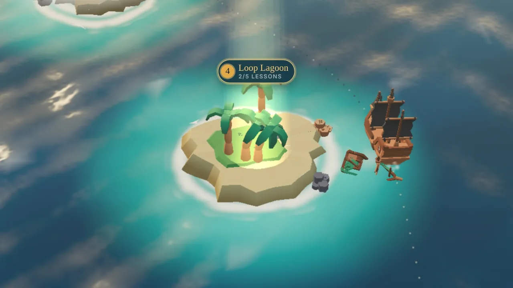
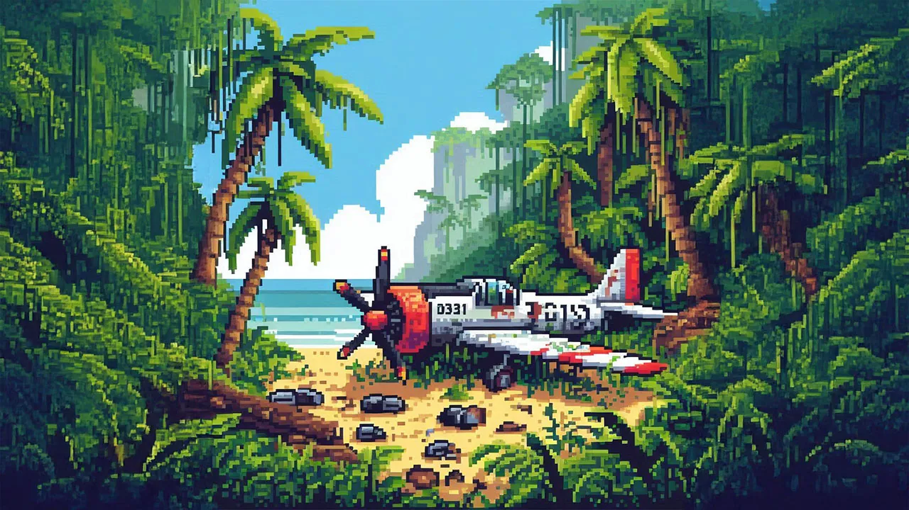
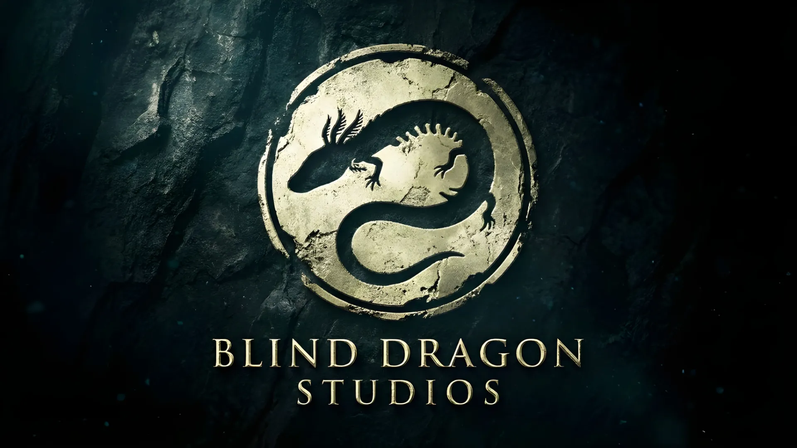

Vaultsworn
Nine seals. One blade.
The Vault beneath the golden valley has broken open. Cross the Vale, restore nine shrines in any order, and face the Demon Lord. Full action combat you play with one hand.
Nine seals. One blade.
The Vault beneath the golden valley has broken open. Cross the Vale, restore nine shrines in any order, and face the Demon Lord. Full action combat you play with one hand.
Featured games
Demon-slaying, Caribbean murder cases, a 1996 Ohio cassette road trip, a Halloween stalker and a car factory after dark. Here's what we're proudest of right now.


Nine seals. One blade.
For a hundred winters the Vault held. Now the seals have shattered and demons are clawing up through the fields. Restore the shrines in any order, watch the storm spread and burn as the Vault fights back, then return to the gate for the Demon Lord.

Four cases. One island. Nobody tells you everything.
Saint-Montego looks like a postcard: pastel houses climb the hill above Port Montego, the café on the square is never empty, and the volcano smokes quietly over all of it. You've just been posted to the island police station, and the Commissioner already has a body for you. Walk the island, question voiced locals, pin what they let slip to your deduction board, and confront the killer.
A sister, a brother and seven cassette tapes.
Harrow's Ford, Ohio, October 1996. Nineteen-year-old June Calloway receives a padded envelope in the late mail holding a cassette with her estranged brother Cal's voice and a pencil map of Route 9. Follow six more tapes across three days—from small-town golden hour down a fogbound highway to rain-soaked Port Calder—where detours cost time and time decides how much of a goodbye June gets.
Four children have vanished from their doorsteps tonight.
Patient #1031 has broken out of Northridge Asylum, and your little brother went trick-or-treating down Elm Street. Collect treats on lit porches, find the key that wakes the cruiser's radio, and stay out of sight. The Stalker adapts to the way you play.
Catch a movie. Outrun the law.
Stamp panels, fit the powertrain and paint your car on a working assembly line, then take it out into a foggy little town full of secrets. Drive-in movies, drag races, police chases, a phantom hearse and a Konami code or two. Runs right in your browser.
The Labours of Heracles.
A love letter to late-90s 3D adventures. Fight the Nemean Lion, the Hydra and the Minotaur across six chapters, from burning Thebes through the Labyrinth and the Underworld to the peak of Olympus, with an authentic N64-era look.
The library
From weekend Pygame experiments to full 3D releases. Filter by how you want to play.

Four murder cases on the 3D Caribbean island of Saint-Montego, with a police SUV, boat, voiced suspects, and a browser text edition.

Halloween night, a missing brother and an escaped patient who learns from how you hide.
Build a car on the assembly line, then drive it through a foggy town full of secrets, races and cops.
An N64-style odyssey through six chapters of Greek myth to free Zeus from his chains.

Learn Python on the high seas: 14 islands, 81 lessons and real Python running in your browser, from print() to classes.
Sequences, code-breaks and riddles that scale from simple arithmetic to binary. Five mistakes and the system reboots.
Five haunted levels of candy collecting, church puzzles, cemetery digging and ghosts that multiply as night falls.

A crash-landed pilot, three jungle levels and a plane to rebuild. Full controller support, MIT licensed.
Pixel-art takes on classic riddles: the river crossing, the torch bridge and the water jugs, with an arcade launcher.
Grab our builds, leave a rating or a comment, and follow the studio to get notified the moment something new drops. Following costs nothing and helps a small studio more than you'd think.

The studio
Blind Dragon Studios is an independent game studio based in Slovenia. We make games across genres and engines, from Unity action and Godot mysteries to 3D worlds that run straight in a browser tab, and we share almost everything we build in the open.
Light, sound and space do the storytelling. We'd rather unsettle you with a quiet porch than a cheap jump scare.
Whenever we can, our games run in the browser with nothing to install. The rest ship as small, portable Windows builds.
Source, devlogs and demos go public early, and community feedback on Discord shapes what we ship. Our pipelines use modern tools, including AI-assisted modelling and voice.
Community
Dev logs, early screenshots, playtest calls and a direct line to the team. We post a community update on the 5th of every month, plus bonus drops when something big lands.